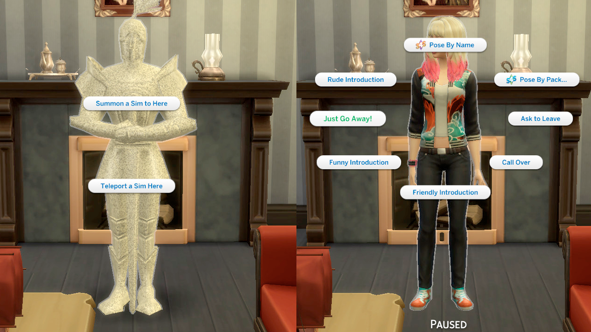

首頁
/
動作

Teleport Any Sim
市民傳送器
by
SCUMBUMBO
邦妮个站
模組主體 ｜
MTS_Scumbumbo_TeleportAnySim.zip
漢化版本 ｜
!MTS_Scumbumbo_TeleportAnySim_CHT_CHS_ABonnie.package
家具分類 ｜
廚房 > 綜合
備用載點 ｜
無
下載版本 ｜
March 1 2024
下載日期 ｜
2026.05.10
【功能性】各種交通工具
by
NecrodogMTSandS4S
模組主體 ｜
necrodog-BG-animated-atv-scooter-segway-wheel-chair-prox-x-hover.7z
家具分類 ｜
室外
備用載點 ｜
無
下載日期 ｜
2026.05.23
壓縮檔中包含摩托車、輪椅、平衡車、越野車
【功能性】男性立式馬桶
by
Menaceman44
模組主體 ｜
MMmaleUrinal.zip
家具分類 ｜
馬桶
備用載點 ｜
無
下載日期 ｜
2025.11.13